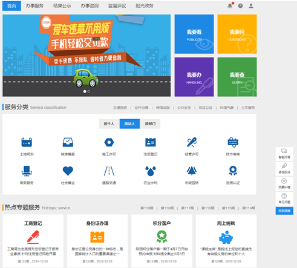
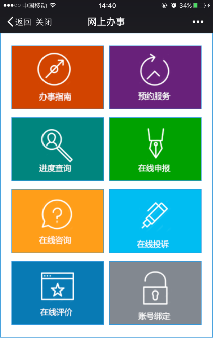
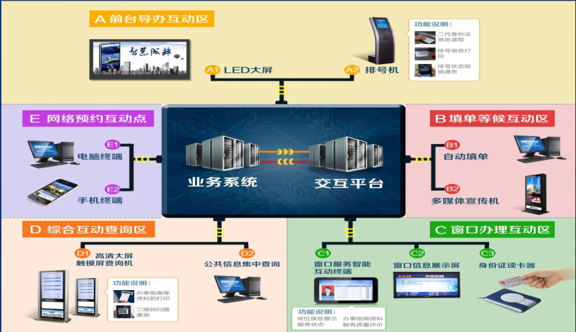
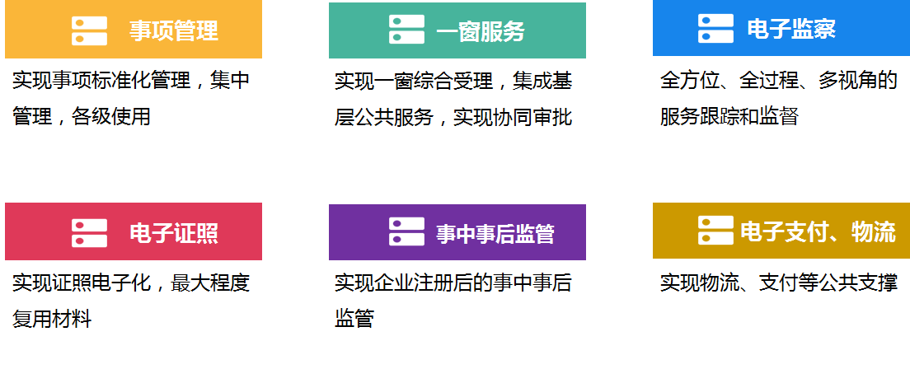
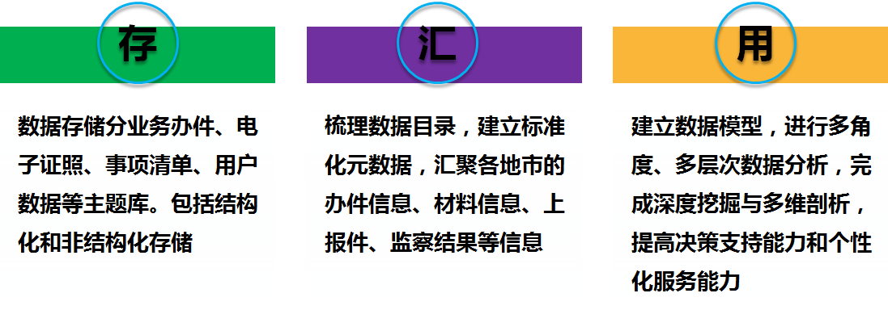
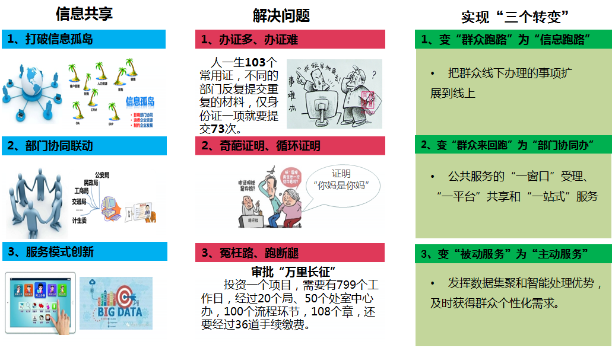

“互联网+政务服务”解决方案
方案概述
运用互联网、大数据、云计算等技术手段，构建“互联网+政务服务”平台，整合各类政务服务事项和业务办理等信息，通过网上大厅、办事窗口、移动客户端、自助终端等多种形式，结合第三方平台，为自然人和法人（含其他组织）提供一站式办理的政务服务。主要实现政务服务统一申请、统一受理、集中办理、统一反馈和全流程监督等功能，利用信息技术手段“让群众少跑腿、信息多跑路”。

建设内容
1、政务服务门户
互联网政务服务门户统一展示、发布政务服务信息，接受自然人、法人的政务服务申请信息，经与政务服务数据共享平台进行数据验证、比对和完善后，发送至政务服务管理平台进行处理，将相关受理、办理和结果信息反馈申请人。

2、实体大厅建设
实体大厅政务服务平台的有机组成部分，线上线下互为支撑。

3、政务服务管理平台
把来自互联网政务服务门户的申请信息推送至政务服务数据共享平台，同步告知业务办理系统；政务服务管理平台从政务服务数据中心获取并向互联网政务服务门户推送过程和结果信息，考核部门办理情况。

4、政务数据中心
汇聚政务服务事项、电子证照等数据，以及来自互联网政务服务门户的信息、政务服务管理平台受理信息、业务办理系统办理过程和结果，实现与人口、法人等基础信息资源库的共享利用。

总体成效
